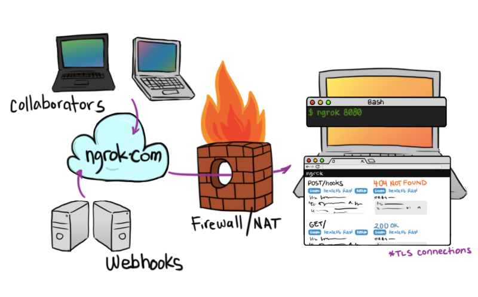
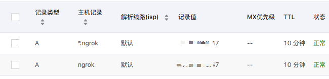

<!doctype html>
<html lang="zh-CN">
<head><meta name="generator" content="Hexo 3.9.0">
    <meta charset="UTF-8">
    <meta http-equiv="X-UA-Compatible" content="IE=11,IE=10,IE=9,IE=8">
    <meta name="baidu-site-verification" content="dIcXMeY8Ya">
    
    <title>Linux下的安装Ngrok服务器的故事 | 小牛试一刀</title>
    <meta name="viewport" content="width=device-width, initial-scale=1, maximum-scale=1, user-scalable=0">
    <meta name="keywords" content="Anthony, 刘经济, 技术博客, 个人博客, PHP, Golang, Linux, FullStack">
    <meta name="description" content="待人以儒墨，不热爱前端技术的后端开发不是一个好的吃货。">

    
    <link rel="alternative" href="/atom.xml" title="小牛试一刀" type="application/atom+xml">
    
    
    <link rel="shortcut icon" href="/favicon.ico">
    
    <link rel="stylesheet" href="/css/style.css">
    <!--[if lt IE 9]>
    <script src="/js/html5.js"></script>
    <![endif]-->
    
<script>
var _hmt = _hmt || [];
(function() {
  var hm = document.createElement("script");
  hm.src = "https://hm.baidu.com/hm.js?d5ebf515ab530cfbdda5f5c85093fb41";
  var s = document.getElementsByTagName("script")[0]; 
  s.parentNode.insertBefore(hm, s);
})();
</script>


</head>
</html>
<body class="home">
    <!--[if lt IE 9]>
    <div class="browsehappy">
        当前网页 <strong>不支持</strong>
        你正在使用的浏览器. 为了正常的访问, 请 <a href="http://browsehappy.com/">升级你的浏览器</a>.
    </div>
    <![endif]-->

    <!-- 博客头部 -->
    <header class="header">
    <section class="container header-main">
        <div class="logo">
            <a href="/">
                <div class="cover">
                    <span class="name">小牛试一刀</span>
                    <span class="description">斯人笔记本</span>
                </div>
            </a>
        </div>
        <div class="dropnav icon-paragraph-justify" id="JELON__btnDropNav"></div>
        <ul class="menu hidden" id="JELON__menu">
            
            <li rel="/posts/39d9f6df.html" class="item ">
                <a href="/" title="首页" class="icon-home">&nbsp;首页</a>
            </li>
            
            <li rel="/posts/39d9f6df.html" class="item ">
                <a href="/about/" title="关于" class="icon-about">&nbsp;关于</a>
            </li>
            
            <li rel="/posts/39d9f6df.html" class="item ">
                <a href="/comment/" title="留言" class="icon-comment">&nbsp;留言</a>
            </li>
            
        </ul>
        <div class="profile clearfix">
            <div class="feeds fl">
                
                
                <p class="links">
                    
                        <a href="https://github.com/haowanxing" target="_blank">Github</a>
                        |
                    
                </p>
                <p class="sns">
                    
                        <a href="http://weibo.com/u/2214092525" class="sinaweibo" target="_blank"><b>■</b> 新浪微博</a>
                    
                        <a href="https://www.facebook.com/imsry.cn/" class="qqweibo" target="_blank"><b>■</b> Facebook</a>
                    
                    <a href="javascript: void(0);" class="wechat">
                        <b>■</b>
                        公众号
                        <span class="popover">
                            
                            <i class="arrow"></i>
                        </span>
                    </a>
                </p>
                
            </div>
            <div class="avatar fr">
                
            </div>
        </div>
    </section>
</header>


    <!-- 博客正文 -->
    <div class="container body clearfix">
        <section class="content">
            <div class="content-main widget">
                <!-- 文章页 -->
<!-- 文章 -->
<article class="post article">
    <header class="text-center">
        <h3 class="post-title"><span>Linux下的安装Ngrok服务器的故事</span></h3>
    </header>
    <p class="post-meta text-center">
         发表于
        <time datetime="2018-09-05T08:22:19.000Z">2018-09-05 16:22:19</time>

        <!-- 不蒜子统计 -->
        <span id="busuanzi_container_page_pv" style='display:none'">
              <i class="icon-smile icon"></i> 阅读数：<span id="busuanzi_value_page_pv"></span>次
        </span>


    </p>
    <div class="post-content">
        <h2 id="使用场景"><a href="#使用场景" class="headerlink" title="使用场景"></a>使用场景</h2><blockquote>
<p>公司A是一家服务提供商，公司B是一家知名企业。<br>现在公司B中的一个软件服务出现了故障，需要公司A的专业人员来排查。由于两家公司相隔甚远，他们采用了远程排查方案。但是公司B的这个软件部署在内网环境的机器C上，层层网关以及种种原因（和谐部分）导致无法将机器C映射到公司B的公网端口。为了解决这种需要打通从一个局域网到另外一个局域网的网络通路，我们叫它‘内网穿透’。</p>
</blockquote>
<p>总所周知，处在同一个局域网的所有机器是可以互通的，而不同局域网中的机器是无法跨域访问的。解决这种问题，我能想到的有：</p>
<ol>
<li>交换机和路由</li>
<li>使用公网VPN服务器</li>
<li>使用内网穿透服务器</li>
</ol>
<p>配置交换机和路由往往非常复杂，遇到复杂的组网环境，还是杀了我吧！</p>
<p>公网VPN服务器我也试过了，使用简单，但是稳定性得不到保证。</p>
<p>所以我最终尝试了内网穿透服务器：Ngrok。（当然还有别的比如：frp）</p>
<a id="more"></a>
<h2 id="Ngrok简介"><a href="#Ngrok简介" class="headerlink" title="Ngrok简介"></a>Ngrok简介</h2><p>Ngrok是一款使用GO语言开发的开源软件（仅针对1.x，2.x不开源），是一个反向代理软件。它可以在你本地运行的服务和公网服务器端点建立一条安全的隧道，这样任何一个和公网连通的客户端都可以访问和使用你的本地服务。Ngrok还可以捕获和分析所有通道上的流量，对后期的分析和处理也有相当好的支持。</p>
<p></p>
<p>Ngrok的git仓库地址：<a href="https://github.com/inconshreveable/ngrok" target="_blank" rel="noopener">https://github.com/inconshreveable/ngrok</a></p>
<h2 id="需要的宝贝"><a href="#需要的宝贝" class="headerlink" title="需要的宝贝"></a>需要的宝贝</h2><h3 id="云服务器（有公网IP的服务器）"><a href="#云服务器（有公网IP的服务器）" class="headerlink" title="云服务器（有公网IP的服务器）"></a>云服务器（有公网IP的服务器）</h3><blockquote>
<p>提供这种服务的像阿里云/腾讯云/百度云等等，随便挑</p>
</blockquote>
<h3 id="域名"><a href="#域名" class="headerlink" title="域名"></a>域名</h3><blockquote>
<p>随便什么域名，只要是你的域名，你能对其配置解析（最好能泛解析）。</p>
</blockquote>
<p></p>
<h2 id="环境要求"><a href="#环境要求" class="headerlink" title="环境要求"></a>环境要求</h2><h3 id="Linux服务器：CentOS、Ubuntu"><a href="#Linux服务器：CentOS、Ubuntu" class="headerlink" title="Linux服务器：CentOS、Ubuntu"></a>Linux服务器：CentOS、Ubuntu</h3><figure class="highlight bash"><table><tr><td class="gutter"><pre><span class="line">1</span><br><span class="line">2</span><br><span class="line">3</span><br><span class="line">4</span><br><span class="line">5</span><br></pre></td><td class="code"><pre><span class="line"><span class="comment">#centos</span></span><br><span class="line">yum -y install zlib-devel openssl-devel perl hg cpio expat-devel gettext-devel curl curl-devel perl-ExtUtils-MakeMaker hg wget gcc gcc-c++ git golang</span><br><span class="line"></span><br><span class="line"><span class="comment">#ubuntu</span></span><br><span class="line"><span class="comment">#自行对应缺啥用'apt-get'补啥，openssl golang make 等等的都得有</span></span><br></pre></td></tr></table></figure>
<h2 id="安装服务器"><a href="#安装服务器" class="headerlink" title="安装服务器"></a>安装服务器</h2><h3 id="克隆Ngrok到本地"><a href="#克隆Ngrok到本地" class="headerlink" title="克隆Ngrok到本地"></a>克隆Ngrok到本地</h3><figure class="highlight bash"><table><tr><td class="gutter"><pre><span class="line">1</span><br></pre></td><td class="code"><pre><span class="line">git <span class="built_in">clone</span> https://github.com/inconshreveable/ngrok.git</span><br></pre></td></tr></table></figure>
<h3 id="制作和生成证书"><a href="#制作和生成证书" class="headerlink" title="制作和生成证书"></a>制作和生成证书</h3><figure class="highlight bash"><table><tr><td class="gutter"><pre><span class="line">1</span><br><span class="line">2</span><br><span class="line">3</span><br><span class="line">4</span><br><span class="line">5</span><br><span class="line">6</span><br><span class="line">7</span><br><span class="line">8</span><br><span class="line">9</span><br></pre></td><td class="code"><pre><span class="line"><span class="built_in">cd</span> ngrok</span><br><span class="line">mkdir cert</span><br><span class="line"><span class="built_in">cd</span> cert</span><br><span class="line">NGROK_DOMAIN=<span class="string">"ngrok.imsry.cn"</span></span><br><span class="line">openssl genrsa -out base.key 2048</span><br><span class="line">openssl req -new -x509 -nodes -key base.key -days 10000 -subj <span class="string">"/CN=<span class="variable">$NGROK_DOMAIN</span>"</span> -out base.pem</span><br><span class="line">openssl genrsa -out server.key 2048</span><br><span class="line">openssl req -new -key server.key -subj <span class="string">"/CN=<span class="variable">$NGROK_DOMAIN</span>"</span> -out server.csr</span><br><span class="line">openssl x509 -req -in server.csr -CA base.pem -CAkey base.key -CAcreateserial -days 10000 -out server.crt</span><br></pre></td></tr></table></figure>
<h3 id="覆盖证书到Ngrok中"><a href="#覆盖证书到Ngrok中" class="headerlink" title="覆盖证书到Ngrok中"></a>覆盖证书到Ngrok中</h3><figure class="highlight bash"><table><tr><td class="gutter"><pre><span class="line">1</span><br><span class="line">2</span><br><span class="line">3</span><br></pre></td><td class="code"><pre><span class="line">cp base.pem ../ngrok/assets/client/tls/ngrokroot.crt</span><br><span class="line">cp server.crt ../ngrok/assets/server/tls/snakeoil.crt</span><br><span class="line">cp server.key ../ngrok/assets/server/tls/snakeoil.key</span><br></pre></td></tr></table></figure>
<h3 id="编译生成Ngrok服务端"><a href="#编译生成Ngrok服务端" class="headerlink" title="编译生成Ngrok服务端"></a>编译生成Ngrok服务端</h3><figure class="highlight bash"><table><tr><td class="gutter"><pre><span class="line">1</span><br><span class="line">2</span><br></pre></td><td class="code"><pre><span class="line"><span class="built_in">cd</span> ../ngrok</span><br><span class="line">GOOS=linux GOARCH=amd64 make release-server</span><br></pre></td></tr></table></figure>
<h3 id="启动和运行服务端-可以写成bash脚本"><a href="#启动和运行服务端-可以写成bash脚本" class="headerlink" title="启动和运行服务端(可以写成bash脚本)"></a>启动和运行服务端(可以写成bash脚本)</h3><figure class="highlight bash"><table><tr><td class="gutter"><pre><span class="line">1</span><br><span class="line">2</span><br><span class="line">3</span><br><span class="line">4</span><br><span class="line">5</span><br><span class="line">6</span><br><span class="line">7</span><br></pre></td><td class="code"><pre><span class="line">./bin/ngrokd -tlsKey=<span class="string">"assets/server/tls/snakeoil.key"</span> -tlsCrt=<span class="string">"assets/server/tls/snakeoil.crt"</span> -domain=<span class="string">"ngrok.imsry.cn"</span>  -httpAddr=<span class="string">":8081"</span> -httpsAddr=<span class="string">":8082"</span> -tunnelAddr=<span class="string">":8083"</span></span><br><span class="line"></span><br><span class="line"><span class="comment">#参数说明：</span></span><br><span class="line"><span class="comment">#-domain 访问ngrok是所设置的服务地址生成证书时那个</span></span><br><span class="line"><span class="comment">#-httpAddr http协议端口 默认为80</span></span><br><span class="line"><span class="comment">#-httpsAddr https协议端口 默认为443 （可配置https证书）</span></span><br><span class="line"><span class="comment">#-tunnelAddr 通道端口 默认4443</span></span><br></pre></td></tr></table></figure>
<h3 id="客户端的编译和使用"><a href="#客户端的编译和使用" class="headerlink" title="客户端的编译和使用"></a>客户端的编译和使用</h3><figure class="highlight bash"><table><tr><td class="gutter"><pre><span class="line">1</span><br><span class="line">2</span><br><span class="line">3</span><br><span class="line">4</span><br><span class="line">5</span><br><span class="line">6</span><br><span class="line">7</span><br><span class="line">8</span><br><span class="line">9</span><br><span class="line">10</span><br><span class="line">11</span><br></pre></td><td class="code"><pre><span class="line"><span class="comment">#window-64bit如下：</span></span><br><span class="line">GOOS=windows GOARCH=amd64 make release-client</span><br><span class="line"><span class="comment">#编译成功后会在ngrok/bin/下面生成一个windows_amd64目录下面有ngrok.exe</span></span><br><span class="line"></span><br><span class="line"><span class="comment">#Linux 平台 32 位系统：GOOS=linux GOARCH=386</span></span><br><span class="line"><span class="comment">#Linux 平台 64 位系统：GOOS=linux GOARCH=amd64</span></span><br><span class="line"><span class="comment">#Windows 平台 32 位系统：GOOS=windows GOARCH=386</span></span><br><span class="line"><span class="comment">#Windows 平台 64 位系统：GOOS=windows GOARCH=amd64</span></span><br><span class="line"><span class="comment">#MAC 平台 32 位系统：GOOS=darwin GOARCH=386</span></span><br><span class="line"><span class="comment">#MAC 平台 64 位系统：GOOS=darwin GOARCH=amd64</span></span><br><span class="line"><span class="comment">#ARM 平台：GOOS=linux GOARCH=arm</span></span><br></pre></td></tr></table></figure>
<h3 id="编写配置文件ngrok-cfg"><a href="#编写配置文件ngrok-cfg" class="headerlink" title="编写配置文件ngrok.cfg"></a>编写配置文件ngrok.cfg</h3><figure class="highlight yaml"><table><tr><td class="gutter"><pre><span class="line">1</span><br><span class="line">2</span><br><span class="line">3</span><br><span class="line">4</span><br><span class="line">5</span><br><span class="line">6</span><br><span class="line">7</span><br><span class="line">8</span><br><span class="line">9</span><br><span class="line">10</span><br><span class="line">11</span><br><span class="line">12</span><br><span class="line">13</span><br><span class="line">14</span><br><span class="line">15</span><br><span class="line">16</span><br><span class="line">17</span><br><span class="line">18</span><br><span class="line">19</span><br><span class="line">20</span><br><span class="line">21</span><br><span class="line">22</span><br><span class="line">23</span><br></pre></td><td class="code"><pre><span class="line"><span class="attr">server_addr:</span> <span class="string">"ngrok.imsry.cn:8083"</span></span><br><span class="line"><span class="attr">trust_host_root_certs:</span> <span class="literal">false</span></span><br><span class="line"></span><br><span class="line"><span class="attr">tunnels:</span></span><br><span class="line"><span class="attr">  http:</span></span><br><span class="line"><span class="attr">    subdomain:</span> <span class="string">"test"</span></span><br><span class="line"><span class="attr">    proto:</span></span><br><span class="line"><span class="attr">      http:</span> <span class="string">"80"</span></span><br><span class="line">      </span><br><span class="line"><span class="attr">  https:</span></span><br><span class="line"><span class="attr">    subdomain:</span> <span class="string">"test"</span></span><br><span class="line"><span class="attr">    proto:</span></span><br><span class="line"><span class="attr">      https:</span> <span class="string">"443"</span></span><br><span class="line"></span><br><span class="line"><span class="attr">  tcp:</span></span><br><span class="line"><span class="attr">    remote_port:</span> <span class="number">5555</span></span><br><span class="line"><span class="attr">    proto:</span></span><br><span class="line"><span class="attr">      tcp:</span> <span class="string">"8001"</span></span><br><span class="line"> </span><br><span class="line"><span class="attr">  ssh:</span></span><br><span class="line"><span class="attr">    remote_port:</span> <span class="number">2222</span></span><br><span class="line"><span class="attr">    proto:</span></span><br><span class="line"><span class="attr">      tcp:</span> <span class="string">"22"</span></span><br></pre></td></tr></table></figure>
<h3 id="启动客户端"><a href="#启动客户端" class="headerlink" title="启动客户端"></a>启动客户端</h3><figure class="highlight bash"><table><tr><td class="gutter"><pre><span class="line">1</span><br><span class="line">2</span><br><span class="line">3</span><br><span class="line">4</span><br></pre></td><td class="code"><pre><span class="line">./ngrok -config=ngrok.cfg start-all <span class="comment">#启动所有服务</span></span><br><span class="line"></span><br><span class="line">./ngrok -config=ngrok.cfg start ssh <span class="comment">#启动SSH服务</span></span><br><span class="line">./ngrok -config=ngrok.cfg start ssh http <span class="comment">#启动SSH和HTTP服务</span></span><br></pre></td></tr></table></figure>
<p>出现下面内容，表示链接成功：</p>
<figure class="highlight bash"><table><tr><td class="gutter"><pre><span class="line">1</span><br><span class="line">2</span><br><span class="line">3</span><br><span class="line">4</span><br><span class="line">5</span><br><span class="line">6</span><br><span class="line">7</span><br><span class="line">8</span><br><span class="line">9</span><br><span class="line">10</span><br><span class="line">11</span><br></pre></td><td class="code"><pre><span class="line">ngrok</span><br><span class="line"></span><br><span class="line">Tunnel Status                 online</span><br><span class="line">Version                       1.7/1.7</span><br><span class="line">Forwarding                    http://test.ngrok.imsry.cn8081 -&gt; 127.0.0.1:80</span><br><span class="line">Forwarding                    https://test.ngrok.imsry.cn:8082 -&gt; 127.0.0.1:443</span><br><span class="line">Forwarding                    tcp://test.ngrok.imsry.cn:5555 -&gt; 127.0.0.1:8001</span><br><span class="line">Forwarding                    tcp://test.ngrok.imsry.cn:2222 -&gt; 127.0.0.1:22</span><br><span class="line">Web Interface                 127.0.0.1:4040</span><br><span class="line"><span class="comment"># Conn                        0</span></span><br><span class="line">Avg Conn Time                 0.00ms</span><br></pre></td></tr></table></figure>
<h3 id="开始访问你的服务吧！"><a href="#开始访问你的服务吧！" class="headerlink" title="开始访问你的服务吧！"></a>开始访问你的服务吧！</h3><blockquote>
<p>直接访问上面的地址就能取得相应的服务<br>如果是ssh和tcp的话，直接使用如：ssh anthony@ngrok.imsry.cn -p 2222</p>
</blockquote>

    </div>
    <p class="post-meta">
        <span class="post-cat">分类：
            <a class="cat-link" href="/categories/学习笔记/">学习笔记</a>
        </span>
        <span class="post-tags">
            标签：
            
    
        <a href="/tags/Ngrok/" title="Ngrok">Ngrok</a>
    

        </span>
    </p>
</article>
<!-- 分享按钮 -->

  <div class="article-share clearfix text-center">
    <div class="share-area">
      <span class="share-txt">分享到：</span>
      <a href="javascript: window.open('http://service.weibo.com/share/share.php?url=' + encodeURIComponent(location.href) + '&title=' + document.title + '&language=zh_cn');" class="share-icon weibo"></a>
      <a href="javascript: alert('请复制链接到微信并发送');" class="share-icon wechat"></a>
      <a href="javascript: window.open('http://sns.qzone.qq.com/cgi-bin/qzshare/cgi_qzshare_onekey?url=' + encodeURIComponent(location.href) + '&title=' + document.title);" class="share-icon qqzone"></a>
      <a href="javascript: window.open('http://connect.qq.com/widget/shareqq/index.html?url=' + encodeURIComponent(location.href) + '&desc=imsry.cn个人博客&title=' + document.title + '&callback=' + encodeURIComponent(location.href));" class="share-icon qq"></a>
      <a href="javascript: window.open('http://shuo.douban.com/!service/share?href=' + encodeURIComponent(location.href) + '&name=' + document.title + '&text=' + document.title);" class="share-icon douban"></a>
    </div>
  </div>


<!-- 上一篇/下一篇 -->

<div class="article-nav clearfix">
    
    <span class="prev fl">
        上一篇<br >
        <a href="/posts/106d7501.html">
            
                更新升级MacOSX到10.14 Mojave (MacBook Air 13-inch early 2014)
            
        </a>
    </span>
    

    
    <span class="next fr">
        下一篇<br >
        <a href="/posts/9739d7d7.html">
            
                不同语言下文件读取和排序测试
            
        </a>
    </span>
    
</div>

<!-- 文章评论 -->

  <script src="/js/comment.js"></script>
  <div id="comments" class="comment">
    <!--
    <div class="sign-bar">
      GitHub 已登录!
      <span class="sign-link">登出</span>
    </div>
    <section class="box">
      <div class="com-avatar"></div>
      <div class="com-text">
        <div class="main">
          <textarea class="text-area-edited show" placeholder="欢迎评论！"></textarea>
          <div class="text-area-preview"></div>
        </div>
        <div class="switch">
          <div class="switch-item on">编辑</div>
          <div class="switch-item">预览</div>
        </div>
        <div class="button">提交</div>
      </div>
    </section>
    <section class="tips">注：评论支持 markdown 语法！</section>
    <section class="list-wrap">
      <ul class="list">
        <li>
          <div class="user-avatar">
            <a href="/">
              
            </a>
          </div>
          <div class="user-comment">
            <div class="user-comment-header">
              <span class="post-name">张德龙</span>
              <span class="post-time">2017年12月12日</span>
              <span class="like liked">已赞</span>
              <span class="like-num">2</span>
            </div>
            <div class="user-comment-body">333333</div>
          </div>
        </li>
        <li>
          <div class="user-avatar">
            <a href="/">
              
            </a>
          </div>
          <div class="user-comment">
            <div class="user-comment-header">
              <span class="post-name">刘德华</span>
              <span class="post-time">2017年12月12日</span>
              <span class="like">点赞</span>
              <span class="like-num">2</span>
            </div>
            <div class="user-comment-body">vvvvv</div>
          </div>
        </li>
      </ul>
      <div class="page-nav">
        <a href="javascript: void(0);" class="item">1</a>
        <a href="javascript: void(0);" class="item">2</a>
        <a href="javascript: void(0);" class="item current">3</a>
      </div>
    </section>
    -->
  </div>
  <script>
  JELON.Comment({
    container: 'comments',
    label: 'ngrok-story' || 'posts/39d9f6df.html',
    owner: 'haowanxing',
    repo: 'haowanxing.github.io',
    clientId: '7e6b078394a99b7940d2',
    clientSecret: 'ff64a6b066e97af64358c44a96e0c7dd398aba1e'
  });
  </script>


            </div>

        </section>
        <!-- 侧栏部分 -->
<aside class="sidebar">
    
    <section class="widget">
        <h3 class="widget-hd"><strong>文章搜索</strong></h3>
        <div class="search-form">
  <form
    id="searchForm"
    method="GET"
    action="https://www.baidu.com/s"
    ectype="application/x-www-form-urlencoded"
    target="_blank"
    autocomplete="false"
    onsubmit="javascript: return false;">
    <input
      id="searchKeyword"
      type="text"
      class="form-control"
      placeholder="输入关键字搜索"
      autocomplete="false"
    />
    <input id="searchKeywordHidden" type="hidden" name="wd" />
    <input id="searchButton" class="btn" type="submit" value="搜索" />
  </form>
</div>
    </section>
    

    <section class="widget">
        <h3 class="widget-hd"><strong>文章分类</strong></h3>
        <!-- 文章分类 -->
<ul class="widget-bd">
    
    <li>
        <a href="/categories/Linux/">Linux</a>
        <span class="badge">(15)</span>
    </li>
    
    <li>
        <a href="/categories/网络安全/">网络安全</a>
        <span class="badge">(2)</span>
    </li>
    
    <li>
        <a href="/categories/学习笔记/">学习笔记</a>
        <span class="badge">(51)</span>
    </li>
    
    <li>
        <a href="/categories/Web/">Web</a>
        <span class="badge">(2)</span>
    </li>
    
    <li>
        <a href="/categories/编程语言/">编程语言</a>
        <span class="badge">(6)</span>
    </li>
    
    <li>
        <a href="/categories/杂谈/">杂谈</a>
        <span class="badge">(4)</span>
    </li>
    
    <li>
        <a href="/categories/Learn-GO/">Learn-GO</a>
        <span class="badge">(6)</span>
    </li>
    
    <li>
        <a href="/categories/算法/">算法</a>
        <span class="badge">(6)</span>
    </li>
    
    <li>
        <a href="/categories/开发板/">开发板</a>
        <span class="badge">(1)</span>
    </li>
    
    <li>
        <a href="/categories/PHP/">PHP</a>
        <span class="badge">(9)</span>
    </li>
    
    <li>
        <a href="/categories/我的分享/">我的分享</a>
        <span class="badge">(1)</span>
    </li>
    
    <li>
        <a href="/categories/考试/">考试</a>
        <span class="badge">(1)</span>
    </li>
    
    <li>
        <a href="/categories/开放平台/">开放平台</a>
        <span class="badge">(1)</span>
    </li>
    
    <li>
        <a href="/categories/游戏/">游戏</a>
        <span class="badge">(2)</span>
    </li>
    
    <li>
        <a href="/categories/数据库/">数据库</a>
        <span class="badge">(2)</span>
    </li>
    
    <li>
        <a href="/categories/MacOS/">MacOS</a>
        <span class="badge">(1)</span>
    </li>
    
</ul>
    </section>

    
    <section class="widget">
        <h3 class="widget-hd"><strong>热门标签</strong></h3>
        <!-- 文章标签 -->
<div class="widget-bd tag-wrap">
  
    <a class="tag-item" href="/tags/Apache/" title="Apache">Apache (4)</a>
  
    <a class="tag-item" href="/tags/Linux/" title="Linux">Linux (5)</a>
  
    <a class="tag-item" href="/tags/Proxy/" title="Proxy">Proxy (1)</a>
  
    <a class="tag-item" href="/tags/firewall/" title="firewall">firewall (1)</a>
  
    <a class="tag-item" href="/tags/CentOS/" title="CentOS">CentOS (3)</a>
  
    <a class="tag-item" href="/tags/https/" title="https">https (2)</a>
  
    <a class="tag-item" href="/tags/Chrome/" title="Chrome">Chrome (1)</a>
  
    <a class="tag-item" href="/tags/数据结构/" title="数据结构">数据结构 (1)</a>
  
    <a class="tag-item" href="/tags/Docker/" title="Docker">Docker (1)</a>
  
    <a class="tag-item" href="/tags/VPN/" title="VPN">VPN (1)</a>
  
    <a class="tag-item" href="/tags/Discuz/" title="Discuz">Discuz (1)</a>
  
    <a class="tag-item" href="/tags/FFmpeg/" title="FFmpeg">FFmpeg (1)</a>
  
    <a class="tag-item" href="/tags/Glassfish/" title="Glassfish">Glassfish (1)</a>
  
    <a class="tag-item" href="/tags/Java/" title="Java">Java (2)</a>
  
    <a class="tag-item" href="/tags/MySQL/" title="MySQL">MySQL (9)</a>
  
    <a class="tag-item" href="/tags/Network/" title="Network">Network (3)</a>
  
    <a class="tag-item" href="/tags/Golang/" title="Golang">Golang (3)</a>
  
    <a class="tag-item" href="/tags/LNMP/" title="LNMP">LNMP (2)</a>
  
    <a class="tag-item" href="/tags/Vim/" title="Vim">Vim (1)</a>
  
    <a class="tag-item" href="/tags/LAMP/" title="LAMP">LAMP (1)</a>
  
    <a class="tag-item" href="/tags/网卡/" title="网卡">网卡 (1)</a>
  
    <a class="tag-item" href="/tags/OrangePi/" title="OrangePi">OrangePi (1)</a>
  
    <a class="tag-item" href="/tags/PHP/" title="PHP">PHP (11)</a>
  
    <a class="tag-item" href="/tags/算法/" title="算法">算法 (1)</a>
  
    <a class="tag-item" href="/tags/时间复杂度/" title="时间复杂度">时间复杂度 (1)</a>
  
    <a class="tag-item" href="/tags/定理/" title="定理">定理 (1)</a>
  
    <a class="tag-item" href="/tags/RPC/" title="RPC">RPC (1)</a>
  
    <a class="tag-item" href="/tags/HTML/" title="HTML">HTML (2)</a>
  
    <a class="tag-item" href="/tags/Javascript/" title="Javascript">Javascript (2)</a>
  
    <a class="tag-item" href="/tags/Laravel/" title="Laravel">Laravel (1)</a>
  
    <a class="tag-item" href="/tags/k8s/" title="k8s">k8s (1)</a>
  
    <a class="tag-item" href="/tags/MacOS/" title="MacOS">MacOS (5)</a>
  
    <a class="tag-item" href="/tags/php/" title="php">php (2)</a>
  
    <a class="tag-item" href="/tags/MarkDown/" title="MarkDown">MarkDown (1)</a>
  
    <a class="tag-item" href="/tags/Git/" title="Git">Git (1)</a>
  
    <a class="tag-item" href="/tags/Ngrok/" title="Ngrok">Ngrok (1)</a>
  
    <a class="tag-item" href="/tags/Excel/" title="Excel">Excel (1)</a>
  
    <a class="tag-item" href="/tags/排序算法/" title="排序算法">排序算法 (1)</a>
  
    <a class="tag-item" href="/tags/INI/" title="INI">INI (1)</a>
  
</div>
    </section>
    

    

    
    <!-- 友情链接 -->
    <section class="widget">
        <h3 class="widget-hd"><strong>友情链接</strong></h3>
        <!-- 文章分类 -->
<ul class="widget-bd">
    
        <li>
            <a href="https://imququ.com/" target="_blank" title="Jerry Qu">Jerry Qu</a>
        </li>
    
        <li>
            <a href="https://jelon.info/" target="_blank" title="Zhang Delong">Jelon</a>
        </li>
    
        <li>
            <a href="http://www.minghua.work/" target="_blank" title="智能硬件产品汪">Minghua Jia</a>
        </li>
    
</ul>

    </section>
    
</aside>
<!-- / 侧栏部分 -->
    </div>

    <!-- 博客底部 -->
    <footer class="footer">
<div style="margin-bottom:1em;">

        <!-- 不蒜子统计 -->
        <span id="busuanzi_container_site_pv">
                本站总访问量<span id="busuanzi_value_site_pv"></span>次
        </span>
        <span class="post-meta-divider">|</span>
        <span id="busuanzi_container_site_uv" style='display:none'>
                本站访客数<span id="busuanzi_value_site_uv"></span>人
        </span>
        <script async src="//busuanzi.ibruce.info/busuanzi/2.3/busuanzi.pure.mini.js"></script>
  
</div>
    &copy;
    
        2014-2022
    

    <a href="/">Best Wishes</a>
</footer>
<div class="back-to-top" id="JELON__backToTop" title="返回顶部">返回顶部</div>

    <!--博客js脚本 -->
    <!-- 这里放网站js脚本 -->
<script src="/js/main.js?v=1645428403755"></script>
</body>
</html>